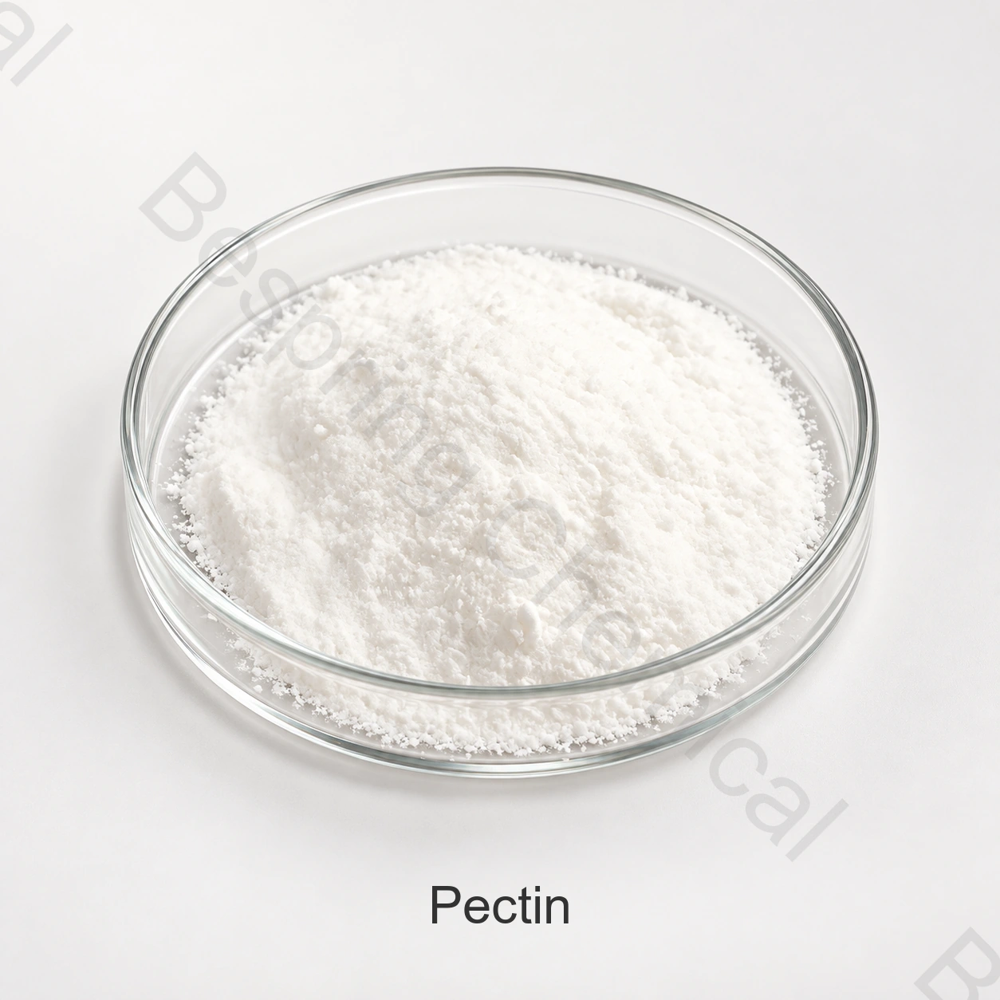

Plant-derived hydrocolloid · E440 / INS 440 · CAS 9000-69-5
Food Grade Pectin
Food grade pectin is a plant-derived gelling agent, thickener and stabilizer used in jams, fruit preparations and selected beverage systems. Bespring supplies food ingredients to B2B buyers; confirm the offered HM, LM or amidated grade, composition and specification against your application before ordering.
Include product, soluble solids/Brix, pH, calcium, set/deposit process and target texture.

Pectin sample image. Appearance does not identify HM, LM or amidated grade; confirm the grade in the product documents.
Mechanism firstSugar-acid or calcium-mediated gel
Process matchedSet rate must fit filling or depositing time
Confirm compositionPectin, standardizing sugar and buffer salts
Source evidenceRequest grade-specific specification and COA
Product identity
What is food grade pectin?
Pectins consist mainly of partial methyl esters of polygalacturonic acid and their ammonium, sodium, potassium or calcium salts. They are extracted from edible plant material, commonly citrus or apples. Amidated pectin also contains amide groups introduced by treatment with ammonia under alkaline conditions. JECFA pectins identity and methods (2016). Pectin is a polymeric material rather than one fixed molecular formula or molecular weight.
Commercial pectin may be standardized for consistent application performance. Grades may contain standardizing sugars and food-grade buffer salts. Request the complete composition and labeling information, including any additional ingredients in a blend, before comparing cost in use or substituting a grade.
The main technical decision
HM, LM and amidated LM pectin are not interchangeable
DE is the percentage of galacturonic-acid carboxyl groups esterified with methanol; DA is the percentage amidated. Neither is the pectin content of the bag. Confirm both where applicable, calcium response and standardization, then validate the grade in the actual formulation. JECFA analytical methods.
DE ≥50%
High-methoxyl pectin (HM)
Evaluated primarily for sugar-acid gel systems and for selected protein-stabilization or viscosity functions.
Define soluble solids/Brix and final pH
Select rapid, medium or slow set for the fill/deposit window
Confirm SAG or other gel-strength method and setting temperature
Test fruit solids, acids, sugars and cook profile together
DE <50%
Low-methoxyl pectin (LM/LMC)
Evaluated for calcium-mediated gels, including lower-soluble-solids fruit systems where calcium level and reactivity are controlled.
Measure native and added calcium, not only recipe dosage
Specify calcium reactivity and target gel texture
Control pH, solids, sequestrants and heating/cooling
Check syneresis and stability through shelf life
E440(ii)
Amidated LM pectin (LMA)
Amidation changes calcium response and the working window. DA must be stated together with DE and application performance.
Confirm degree of amidation and current regulatory identity
Map calcium tolerance and setting temperature
Determine whether the gel is thermoreversible under actual conditions
Do not substitute for conventional LM on equal weight alone
Terminology boundary: “rapid set,” “slow set,” “gummy pectin,” “yogurt pectin” and “bakery pectin” are performance/market labels, not complete specifications. Require DE/DA, composition, test methods and a matched application trial.
Start with the formulation constraints
Pectin selection map
High soluble solids + acidic gel
Start screening an HM grade, then choose setting rate around cook, transfer, filling and cooling time.
Lower solids + controlled calcium
Screen LM or LMA by calcium reactivity, pH, sequestration and required gel texture.
Acid protein stabilization
Use an application-specific pectin; check protein level, pH path, heat, homogenization, sediment and serum separation.
Deposited confectionery
Match gel onset to kettle/depositor residence, temperature and acid addition so the mass fills before setting.
No universal pH, Brix or calcium numberSupplier ranges are starting points. Fruit buffering, acid type, sugar composition, calcium availability, sequestrants, solids measurement and process history shift the real gel window.
Application-specific qualification
Food applications: jam, confectionery and selected drinks
Select a grade for the food system and the process, then qualify texture and stability through the intended shelf life. Use levels require formulation trials and destination-market review; this page does not prescribe a universal dosage.
Jams, jellies and fruit preparations
Set target Brix, pH, gel strength, spreadability and fruit suspension. Validate acid addition, endpoint solids, filling temperature, set time, syneresis and storage texture.
Gummies and confectionery gels
Match HM set rate or LM/LMA calcium response to depositing time. Test solids, acid timing, gel temperature, demoulding, drying, coating and bite throughout shelf life.
Acid dairy and plant-protein drinks
Selected HM grades are used to stabilize acidified dairy drinks. For dairy or plant-protein trials, match the grade to protein type, pH, acidification, heat and homogenization; measure viscosity, sediment and serum separation. Jam gel strength alone does not qualify a beverage grade.
Bakery fillings and glazes
Balance pumpability, bake stability, fruit suspension, water migration, sheen and clean cut. Test freeze-thaw or bake cycles where relevant.
Specifications and purchasing documents
Food grade pectin specification checklist
The table lists information to request for the offered grade, not guaranteed Bespring limits. Agree the commercial specification and test methods in writing, and use a batch COA to verify reported results against that specification. A reference standard alone is not a batch test report.
On small screens, scroll the table horizontally to read all three columns.
Pectin purchasing specification checklist
Area
Required fields
Why it changes selection
Identity
E440(i) non-amidated or E440(ii) amidated; HM/LM/LMA; botanical source
Separates regulatory identity and gel mechanism
Modification
DE, DA where applicable, calcium reactivity
Predicts set behavior but does not replace application tests
Performance
Set category; SAG/gel strength and method; setting temperature, viscosity and test conditions
Matches cook, filling, deposit and cooling window
Composition
Pectin content, standardizing sugar/carrier, buffer salts, calcium salts or sequestrants
Clarify whether the offer is pectin standardized with sugars/buffers or a multi-ingredient system; compare on the same composition basis
Physical
Appearance, particle distribution, dispersibility, bulk density
Affects dosing, dust, lumping and hydration; request grade-specific addition instructions
Purity
Galacturonic acid with preparation/basis; loss on drying; total insolubles and acid-insoluble ash; SO2, nitrogen, residual solvents; individual elemental limits
Specify units and methods. Total ash is not acid-insoluble ash; “heavy metals as Pb” does not replace individual element tests
Microbiology
TPC, yeasts/moulds, E. coli and market/application-specific pathogens; method and tested sample mass
Must reflect process risk and destination requirements
Commercial
Packing, shelf life, storage, MOQ, quantity, origin, Incoterm, lead time
Connects technical approval to deliverable supply
JECFA identity and assay reference
JECFA Monographs 19 (2016), pp. 85–89, specifies ≥65% galacturonic acid on an ash-free, dried basis after the prescribed acid/alcohol washing. This is not a guarantee that a standardized bag contains 65% active pectin. Request the assay method and basis. Read the 2016 pectins specification.
Regulation (EU) 2026/196 applies from 18 August 2026. For E440(i)/(ii), the lead limit for uses other than foods for infants and young children is 1 mg/kg, versus JECFA's 2 mg/kg; infant/young-child uses have stricter EU limits. The amendment also specifies other elements and microbiology. Request the appropriate individual tests; do not assume JECFA evidence establishes EU conformity. Read Annex II and the transitional provisions.
Compliance boundary: ingredient purity and food-use authorization are separate checks. U.S. 21 CFR 184.1588 describes pectins and use under current good manufacturing practice, with an incorporated FCC specification. Confirm the applicable food category, conditions and labeling in the destination market; a company certificate does not establish coverage of this grade or batch.
Hydrate first, control gel timing
Pectin process trial
Evaluate dispersion, hydration and gel timing separately. Pectin forms a colloidal dispersion in water; use grade-specific mixing instructions and measure performance under the intended process conditions. EU E440 identification.
1
Fix the product target
Record Brix/solids, pH, calcium, texture, set time, filling/deposit temperature and shelf conditions.
2
Disperse without lumps
Use the supplier-approved addition route, often separating particles with a compatible dry blend before controlled addition into adequate agitation.
3
Complete hydration
Control water availability, temperature, shear, time and ingredient order before high sugar, calcium or acid creates a restrictive environment.
4
Trigger and deposit
Add acid or calcium according to the selected mechanism and keep the transfer/deposit operation inside the measured working window.
5
Measure the cooled product
Evaluate set time, gel strength, spread/bite, syneresis, cut, filling stability and sensory release after defined equilibration.
6
Repeat through shelf life
Include storage temperature, freeze-thaw or baking where relevant, and compare at least one representative production-scale batch.
Storage and handling
Protect pectin and its standardized blend
Keep dryStore sealed and protect hygroscopic powder from humidity, contamination, pests and packaging damage.
Follow source conditionsUse the current specification/SDS for temperature, shelf life and stock rotation; do not infer one universal limit.
Control substitutionsChanging source, grade or standardization can shift gel timing. Revalidate before production release.
Buyer questions
Food grade pectin FAQ
What is the difference between HM and LM pectin?
HM pectin has DE of at least 50% and is commonly selected for sugar-acid gels. LM pectin has DE below 50% and is commonly selected for calcium-mediated gels, including reduced-sugar systems. Match set behavior, pH, solids, calcium and processing; the types are not equal-weight substitutes.
Is amidated pectin the same as ordinary LM pectin?
No. Amidated LM pectin, commonly called LMA, corresponds to E440(ii) and contains amide groups measured by DA. Non-amidated LM corresponds to E440(i). Request DE, DA where applicable, calcium response and composition for the exact grade.
Does rapid-set pectin make a stronger gel?
Not necessarily. Set speed and final gel strength are different properties. Match the working window to cooking, transfer, depositing and cooling. Compare SAG or other strength results only with the same method and test conditions.
Is commercial pectin always 100% unstandardized pectin?
No. Commercial pectin may contain standardizing sugars and buffer salts. Obtain the composition and labeling information. The galacturonic-acid assay after prescribed washing is not the active-pectin percentage of the bag and does not determine a replacement dosage.
Can a jam pectin be used in an acidified protein drink?
Do not select a beverage grade by jam gel strength alone. Selected HM grades are used in acidified dairy drinks. Confirm suitability for the specific protein, pH, heat and homogenization process, and test sediment, serum separation and viscosity through storage.
Which documents should I request before ordering?
Request the current grade-specific specification or TDS, a representative COA, composition and labeling information, SDS, and test methods for critical properties. Confirm availability and scope of any certification. A batch COA reports batch results; a standard defines requirements and a specification defines agreed limits.
What should a pectin RFQ include?
State the food application, HM/LM/LMA or required function, soluble solids/Brix, pH, calcium, DE/DA if specified, working time and temperature, and target texture. Include the required standard, critical tests, quantity, packaging, destination, Incoterm and delivery requirements.
Content updated: 2026-10-05 · Identity and standard references: FAO/WHO JECFA, U.S. eCFR and the EU E440 amendment.